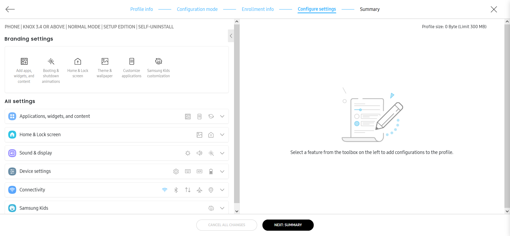
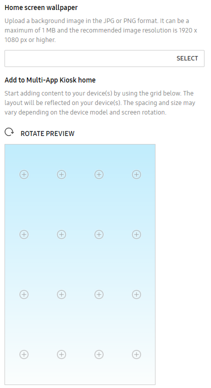

Configure profile settings
Last updated April 9th, 2025
The Configure settings page is where you can customize the appearance and functionality of your enterprise devices.

Under All settings on the left, you can click a category to view the available configuration settings. Click any setting to view the available options — and if available, a preview of the option — in the panel on the right. Once you’re finished with your configuration, click NEXT: SUMMARY to review your profile.
If you just want to quickly customize your fleet’s wallpaper, animations, and themes, you can use the Branding settings toolbar located at the top of the page. These same options can also be found under All settings, but are placed in a toolbar at the top for quick access.
The following configurations are available:
Applications, widgets, and content
These settings allow you to automatically install apps on the device during enrollment, restrict the device user’s application usage, customize apps, and configure the default browser.
Add apps, widgets, and content
Upload apps, widgets, and other content to be installed on the device by the profile. For details on how to upload apps, see Upload an app.
Once apps are added to your library, you can grant permission to third-party developers to let them remotely control apps in order to help troubleshoot app-related issues.
To allow remote control access for third-party developers, this feature must be enabled by a Samsung Admin. Contact your Samsung rep if you want this feature enabled. In addition, this feature is only available on devices uploaded by an approved Knox reseller, or a Knox MSP with reseller permissions.
To give third party app developers remote control access:
- Select an app from the list of apps in the profile.
- Click ACTIONS > App permission(s).
- On the pop-up window, select REMOTE CONTROL for the app(s) you want to grant access to, then click UPDATE.
Under Content, configure the following settings:
- Set content folder name — Provide a unique name for the folder where content associated with this profile is pushed.
- Add files to the Contents folder — Upload specific content, such as video, music, or digital books to the device Content folder.
- Additional content — After uploading content to the profile, you can optionally choose to download it to the device during configuration. Any content you don’t select will be downloaded in the background once configuration is complete.
By default, Knox Configure profiles have a 1 GB size limit, which includes all uploaded apps and content. If your profile exceeds this size limit, try compressing or removing files, then try saving again.
Application restrictions
Disable apps on the device as well as restrict device users from installing, updating, or stopping apps and opening URLs.
Under APPLICATION RESTRICTIONS, configure the following settings:
-
Disable system applications
-
Disable all pre-installed browsers — Disables the internet browsers on the device.
-
Disable Google Play store — Prevents the device from accessing the Google Play store to install additional applications.
-
Disable S Voice — Disables the S Voice personal assistant on the device. An error may occur if you enable and deploy this setting to a device that does not support S Voice.
-
-
Disable the usage of other applications — Enter the package name(s) of the applications you want to disable. You can also enter package names in bulk by uploading them as a CSV file.
-
Application installation restrictions
-
Nothing — No application installation restrictions are applied to devices utilizing this profile.
-
Installation blocklist — Select this option to upload a CSV file of device app package names that the device user is unable to install on their device. An admin can also manually enter the package names to exclude as well. The list of package names is refreshed and updated whenever the policy is updated.
-
Installation allowlist — Select this option to block all other apps except for the ones in this list. Applications not in this allowlist are not allowed to be installed even if the device user has access to the app store. The list of package names is refreshed and updated whenever the policy is updated.
-
Block applications from unknown sources — Prevents a user from installing apps from sources other than the Google Play store.
-
-
Application update restrictions (Dynamic edition only)
-
Nothing — No application update restrictions are applied to devices utilizing this profile.
-
Update blocklist — Once an application is added to the update blocklist, it cannot be updated on the device beyond its current version. Upload the app package names through either a CSV file, or by entering them manually. The blocklist is updated whenever the policy is updated.
-
Update allowlist — Once an application is added to the update allowlist, it can be updated to a newer version. Upload the app package names through either a CSV file, or by entering them manually. The blocklist is updated whenever the policy is updated.
-
-
Applications notification restrictions (Dynamic edition only)
-
Nothing — Allow or deny application notification restrictions are not applied to system pop-up and status bar notifications.
-
Notifications blocklist — List the app package names that you don’t want the device to receive system notifications and pop-ups for.
-
Notifications allowlist — List the app package names that you want to allow system notifications and pop-ups for.
-
-
Application URL restrictions (Dynamic edition only)
-
Applications — List the package names of those applications intended for URL restrictions.
-
URL blocklist — Provide a blocklist of URLs for the device. For example, you may wish to blocklist non-enterprise websites (social media sites).
-
URL allowlist — Provide an allowlist of URLs for the device. Users can only access websites on the allowlist.
-
Prevent applications from being uninstalled — Enter the package name(s) of applications end users are restricted from removing.
-
Prevent applications from being stopped — Prevents applications from being stopped by the system, other applications or the device user. If this option is selected, apps that would normally be stopped under conditions like Battery Saver mode will continue to run and consume battery life.
-
-
Block applications from unknown sources — Prevents a user from installing apps from sources other than the Google Play store.
-
Prevent applications from being uninstalled — Enter the package name of the app end users are restricted from removing. For Setup edition profiles, app uninstalling prevention is available only for one app.
Customize applications
Force apps to launch on device startup, edit app permissions, customize apps on the device by changing the app name or icon, and upload contacts to the device.
-
Launch automatically after configuration — Select the content that automatically displays when the device completes enrollment.
-
Applications — Select the app to launch automatically once the initial profile configuration is set. You can only select this option if you’ve added apps to the profile.
- Select Launch immediately on every boot-up to launch the selected app(s) automatically each time the device is booted.
-
Other content — Select additional content, such as a sound file, to launch automatically.
-
Select Launch immediately on every boot-up to launch the selected content automatically each time the device is booted.
-
You also need to Select an application to play the file if you choose to set content to launch automatically.
-
-
-
Download application during configuration — Select one or more apps to download during configuration and not in the background.
-
Add application permissions — If necessary, add any application permissions that are granted when defined in the application manifest file.
-
Change application icon — Enter the package name of an app you have added to the profile and upload a custom image to use as the app icon.
-
Change application name — Enter the package name of an app you have added to the profile and enter a custom name to distinguish the application.
If necessary, upload a VCF file with the specific contact information you want to include with this profile.
Samsung Internet
Set the following default browser settings:
-
Set homepage — Enter the URL for the Samsung Internet browser home page.
-
Add web bookmarks — Add the Title and URL of the web bookmarks for the Samsung Internet browser. If your users need to sign in to an employee portal to access internal files, you may wish to add a web bookmark for that portal.
-
Disable auto fill forms (Dynamic edition only) — Optionally enable auto fill for the Samsung Internet browser to automatically enter commonly-entered information on a web page. This feature is only available for devices running Knox 2.7.1 and higher.
Home & Lock screen
These settings allow you to customize the appearance and functionality of the device’s home and lock screens.
Theme & wallpaper
Select the type of device you’re configuring to show the display options available for that device.
Under THEME, you can assign a custom theme to the device depending on the device’s operating system if you’re configuring a phone or Galaxy Z Fold. Select the device OS, then upload a theme (as an APK file).
Under WALLPAPER, you can upload custom home and lock screen wallpaper for the device. If you’re configuring a profile for Z Flip or Z Fold devices, you can set different wallpapers for the internal display and cover screen. After you set a Default lock screen wallpaper or a Cover screen wallpaper, you’ll also get an additional option to change the font color of the Time/Date widget.
(Dynamic edition only) Select Prevent end users from changing the Home screen and Lock screen wallpapers if you want to restrict the device user’s ability to customize the device wallpapers.
Home & Lock screen
Select the type of device you’re configuring to show the display options available for that device.
Under DEVICE, configure the following settings:
-
Customize favorite applications — Add a row of pinned icons at the bottom of the screen. Some tablet models might not support this feature. You can customize the apps on both the internal display and cover screen on Galaxy Z Fold devices.
-
Clear all favorite applications from the Home screen — Remove all favorite apps from the device home screen. You can remove favorite apps from both the internal display and cover screen on Galaxy Z Fold devices.
-
Clear all shortcuts from the Home screen — Removes all current app icons and widgets from the home screen. You can remove all shortcuts from both the Internal screen and Cover screen on Samsung Galaxy Z Fold series devices.
Under Device screen preview:
-
Select Lock home screen layout if you want to prevent users from modifying the placement of apps and widgets on their device home screens.
-
Select a grid size for the device home screen.
-
Click any of the anchors (+) on the preview image to add an app (either as a local APK or from Google Play), a Google Play shortcuts folder or a Google Play shortcut for one or more apps, a web bookmark, a file (PDFs, videos, or images), or a folder to the home screen.
When you add an app from Google Play, you must also add its shortcut. If you don’t add the shortcut, the app won’t be added on the device, making it inaccessible to the device user.
-
Click Add another screen to add an additional page of shortcuts. You can add up to six pages.
Google Play apps added as home screen shortcuts aren’t pre-installed on the device. Instead, when the device user taps the shortcut, the app’s page opens in Play Store, where they can download it.
Under LOCK SCREEN, you can customize the shortcuts and widgets available to the device user.
Under Shortcuts, you can customize the shortcuts displayed on the bottom left and right corners of the device lock screen. By default, the shortcuts are set up to point to the default phone and camera applications. To customize a shortcut, enter the app package name in the Left shortcut or Right shortcut field. You can choose to hide the shortcuts by selecting Shortcuts under Hide widgets.
You can also choose to hide the Time, Date, Owner information, Help Text, and Battery information widgets. Select one or all widgets as needed to visually inspect and hide widgets from the device display.
(Dynamic edition only) If you select Set automatic lock time, you can choose the idle time between the screen timeout (set in Sound & display ) and the device lock time. The set lock time persists even after a firmware update.
Select HOME SCREEN if you want to choose to show or hide notifications on the device home screen. This setting is only available to devices running Knox version 3.4 or higher.
Sound & display
These settings allow you to customize the sound, display, and booting/shutdown animations for the device.
Display
Under DISPLAY, configure the following settings:
-
Remove swipe lock screen — Remove the swipe lock screen from the device. The device will wake with the launcher or previous screen when the power key is pressed, and remain unlocked even if the power key is pressed again or the screen turns off. Only available for devices using Knox 3.4 and above.
-
Hide system bar — Hide the status bar, navigation bar, or system bar depending on the Android system on the device.
-
Screen always on when plugged in — Enable the screen to stay on when the device is connected to a power source.
-
Set the brightness — Select Brightness and use the slider to set the default device screen brightness.
-
Set blue light filter — Select On to control the intensity of the device’s blue light if the screen is too bright in the dark. Once selected, use the Opacity slider to refine the opacity of the device blue light display. This feature may not work properly on devices which use a software blue light filter.
Under SET THE DEFAULT DEVICE FONT, select the system font and adjust the font size with the slider.
Turn on Larger font sizes to increase the font size above 7pt. If your device is not supported, the largest font size will be utilized.
Sound
Adjust the volume levels for each audio source on the device. You can also choose to force the device to Play all application sounds on the device speakers.
Booting & shutdown animations
You can customize the device boot animation by uploading images and setting the desired image orientation, dithering and size. Once created and uploaded, you can preview and verify the animation before assigning it to devices.
To upload custom animations to your library in Knox Configure, see Create a custom animation file.
For Galaxy Z Fold or Z Flip devices, if you add a main screen animation, but you don’t add a cover screen animation, then the cover screen may appear black during bootup or shutdown. It’s recommended that you always add a cover screen animation if you are using main screen animations.
Under GENERAL DISPLAY, configure the following settings for devices running Knox version 3.4 and higher:
-
Adaptive brightness determines whether brightness adjustments are collected and applied automatically under similar lighting conditions.
This setting is only applicable for devices running One UI version 6.0 and lower. For newer devices (with One UI versions higher than 6.0), this setting remains available on the console, but has no impact on the device. Users will always be able to control adaptive brightness settings from their device’s Settings screen.
-
Accidental touch protection can optionally protect from unintended touch inputs when the mobile device is placed in a dark place, such as a pocket or purse.
-
Touch sensitivity can increase the touch sensitivity of the device in special cases, such as while wearing gloves in a hospital or industrial environment or when a thick screen protector is used. This feature is supported on devices running Knox 3.7.1 and higher.
-
Screen zoom makes displayed items appear larger or smaller as their image size requires.
-
Screen timeout sets a screen display inactivity timeout of 15 seconds, 30 seconds, 1 minute, 2 minutes, 5 minutes, 10 minutes, or 30 minutes.
Each General display setting has an Allow user to change setting option to either Allow device user changes, Do not allow user changes or Do not allow and hide setting from user. These options can be set independently of each other and are persistent across subsequent logins.
Select NAVIGATION BAR to customize the button order of the device navigation bar. This option is only available for devices running Knox version 3.4 or higher.
Select NOTIFICATIONS to show or hide badges on app icons when the apps receive notifications. This option is only available for devices running Knox version 3.4 or higher.
Each Notification setting has an Allow user to change setting option to either Allow device user changes, Do not allow user changes or Do not allow and hide setting from user. These options can be set independently of each other and are persistent across subsequent logins.
Select STATUS BAR to show or hide the device battery percentage in the status bar. This option is only available for devices running Knox version 3.4 or higher.
Under GENERAL SOUNDS AND VIBRATIONS, configure the following settings for devices running Knox version 3.4 and higher:
- Vibrate while ringing determines whether the mobile device vibrates when receiving an incoming call.
- Set the Vibration pattern experienced on the mobile device when receiving an incoming call. Options include Basic call, Heartbeat, Ticktock, Waltz, and Zig-zig-zig.
- Use volume keys for media determines whether the media volume can be controlled by default when a volume key is pressed.
Each General sounds and vibrations setting has an Allow user to change setting option to either Allow device user changes, Do not allow user changes or Do not allow and hide setting from user. These options can be set independently of each other and are persistent across subsequent logins.
Under SYSTEM SOUNDS AND VIBRATIONS, configure the following settings:
- Touch sound determines whether the device plays tones when touching certain screen items.
- Screen lock sound determines whether the device plays tones when locking or unlocking the screen.
- Charging sound determines whether the device plays tones when the device begins charging.
- Dialing keypad tone determines whether the device plays tones when tapping the dialing keypad.
- Keyboard sound determines whether the device plays tones when tapping the Samsung keyboard.
- Keyboard vibration determines whether the device vibrates when tapping the Samsung keyboard.
Each System sounds and vibrations setting has an Allow user to change setting option to either Allow device user changes, Do not allow user changes or Do not allow and hide setting from user. These options can be set independently of each other and are persistent across subsequent logins.
Device settings
These settings allow you to customize device locale and language settings, the keyboard, developer settings, hardware key mapping, and battery settings.
General settings
Under GENERAL SETTINGS, configure the following settings:
-
Locale — Select the language and country for the device.
The language and country pair selected must be a language and country combination that is supported by the device. If not, it could result in a configuration error. You can check which language and country combination is supported in the language menu of your device settings.
-
Time zone — Keep current settings or select the appropriate timezone for the device.
-
Automatic Time Update — Set the device to automatically update its time and date information from a network resource.
Select LANGUAGE AND INPUT to show or hide the keyboard button.
Select TEXT TO SPEECH to set up the device text-to-speech engine and adjust the pitch and speech rate.
Each Text-to-speech setting has an Allow user to change setting option to either Allow device user changes, Do not allow user changes or Do not allow and hide setting from user. These options can be set independently of each other and are persistent across subsequent logins.
Select SETTINGS to disable the suggestions pop-up on the device after enrollment.
Keyboard
Select Customize keyboard options to enable or disable predictive mode on the device keyboard.
Under Add keyboards, you can add up to five third party keyboard to the device. The appropriate keyboard application must also be installed on the device to be added successfully using Knox Configure.
Select GENERAL KEYBOARD to enable or disable the keyboard settings and toolbar items in the device keyboard.
Developer settings
Set the Default USB debugging mode to On or Off. When turned off, developers cannot receive debugging information from the device or use Android Debug Bridge to push content or files to the device. You can disable USB debugging mode entirely.
Remap hardware keys
Customize the hardware key controls on the device.
If you’re configuring a Galaxy XCover Pro or Galaxy Tab Active Pro device running Knox version 3.4.1 or higher with a Normal mode profile, you can add a custom key mapping configuration.
Select Microsoft Teams to use a preconfigured template or Custom to create a custom key mapping configuration.
To create a custom key mapping configuration, select the Key name, Key press type, Action type, and Application package name for the configuration.
If you’re creating a ProKiosk mode profile, you can’t add a custom hardware key configuration, but you can choose to hide the Power off and Restart options when the device user presses the device power button.
Select BIXBY KEY to configure the behavior of the device’s Bixby key. You can configure the following settings:
-
Double-press the Bixby key — You can choose to allow or restrict the device user from double-pressing the appropriate key. You can turn this setting on or off.
-
Allow users to change setting — Choose whether you want to allow users to change the Bixby key settings, disallow, or disallow and hide the setting altogether.
-
Double-press key type — Select what happens when the user double-presses the Bixby key: Quick launch a camera or Open application.
- If you select Open application, enter the Application component name of the app you want to open.
-
Press and hold the Bixby key — Choose to either Wake Bixby or show the Power off menu.
Battery
Under POWER AND BATTERY SETTINGS, configure the following settings:
-
Power on the device when connected to a power source — Set devices to automatically power on when connected to a power source.
-
Power off the device when disconnected from a power source — Select this option to automatically power off a device when disconnected from its power source.
-
Extend battery life by limiting the maximum charge when connected to a power source — Select this option to provide a maximum charge setting of 85% to avoid issues with keeping a tablet on its charger too long. When selected, the device will stop charging once it reaches 85% of total available charge.
The Power on the device when connected to a power source and Power off the device when disconnected from a power source options function separately from each other with no dependence on each other.
Restrictions
These settings allow you to restrict device features to improve device security and reduce potential threats.
Security
Under SECURITY, choose to apply the following security restrictions:
-
ALL — All of the Security restrictions are applied.
-
Disable SD card access (Dynamic edition only) — Prevents the device from reading data from a SD card or writing data to a SD card.
-
Disable Software Updates (Firmware updates via Wi-Fi and Mobile networks) — You can set a FOTA block for devices so that even if the device user tries to manually update the device’s firmware, it is blocked on the device. Only after the new device is enrolled in Knox Configure, KC will decide to permit the appropriate FOTA update to the device or not based on FOTA block option. If you set the FOTA block as on, then KC will block FOTA updates. If not, KC won’t block it and the end user can select whether to accept the FOTA update or not. This restriction negates the chances of an OS mismatch on the device and ensures that all partner apps remain functional. Additionally, for devices running Knox 3.4 or higher and the Samsung T295 device, you can prevent the device user from updating the firmware of the device in download mode.
-
Disable factory reset (Dynamic edition only) — Prevents a user from factory resetting their device. When factory reset, Wi-Fi, and mobile data is disabled in Knox Configure. Consequently, the device is no longer able to update the profile they are enrolled in, and are unable to unenroll if need be. The device requires a network connection be re-established to receive updates and changes from Knox server resources.
-
Disable device power off for users (Dynamic edition only) — Prevents the user from turning the device off. The device will only turn off if you disable this setting or if the battery level is critically low.
-
Disable Multiple user mode — On supported devices, prevent more than one user account from being created.
-
Disable Safe mode — Safe mode prevents the device from running third-party apps. Select this option to prevent users from enabling Safe mode.
-
Disable firmware update in download mode — Prevents the device user from updating the firmware of the device while the device is in download mode. This feature is supported on devices running Knox 3.4 or higher.
-
Disable Maintenance mode — Hide the option to put the device in Maintenance mode, which hides personal data on the device if the device user needs to have it repaired. This feature is supported on devices running One UI 6.1 (Android 14) or higher.
-
Biometric authentication (Dynamic edition only) — choose to apply the following security restrictions:
- ALL — Select All to disable fingerprint recognition, iris scanner and facial recognition device user authenticators.
- Disable Fingerprint scanner — Disables a device’s ability to use its fingerprint scanner as a user authenticator option.
- Disable Iris scanner — Disables a device’s ability to use its optical iris scanner as a user authenticator option.
- Disable Face recognition — Disables a device’s ability to use its facial recognition capability as a user authenticator option.
If enabling or disabling biometric authentication, the device’s password quality will be automatically set and the device’s swipe option is no longer available.
-
Select LOCATION to enable or disable Wi-Fi and Bluetooth location detection.
-
Select OTHER SECURITY SETTINGS to enable or disable visible passwords.
Hide settings menu / element (Dynamic edition only)
Hide one or more of the following items from the device settings menu:
- ALL
- Backup and Reset
- Bluetooth
- Airplane mode
- Language
- Lock screen and security (Lock screen)
- Wi-Fi
- Always On Display in Quick Panel
USB device restrictions (Dynamic edition only)
Set the following device USB restrictions for profile data security over the USB interface:
-
Disable USB Media Transfer Protocol (MTP) — MTP is a protocol that enables media files to be transferred automatically to and from mobile devices.
-
Disable USB host storage — Selecting this option disables USB host storage in its entirety. Individual USB classes cannot be disabled is this option is selected.
-
Disable the following USB classes — Select this option to disable specific USB classes (Audio, CDC data, Communications, Human interface device, Mass storage, Miscellaneous, Still image, Vendor specific, and Wireless Controller). Click Show Examples to review the USB data classes impacted with each checkbox option. If Disable USB host storage is selected, individual USB classes cannot be disabled.
Device connectivity (Dynamic edition only)
Under Roaming, configure the following settings:
- ALL — Disables all of the settings listed under Roaming.
- Prevent end users from using mobile data while roaming.
- Prevent end users from syncing while roaming.
- Prevent end users from receiving WAP push messages while roaming. — WAP messages direct users to web pages.
- Prevent end users from making voice calls while roaming.
Under Tethering, configure the following data tethering settings to define how the profile shares Internet connection information with other mobile devices:
- ALL — Disables all of the settings listed under Tethering.
- Prevent end users from using Bluetooth tethering.
- Prevent end users from using USB tethering.
- Prevent end users from using Wi-Fi tethering.
Device functionality (Dynamic edition only)
-
ALL — Disable all of the settings listed under Device functionality.
-
Prevent end users from using the camera.
-
Prevent video recording if the camera is enabled.
-
Prevent end users from capturing the screen.
-
Prevent end users from using the microphone.
-
Prevent audio recording if the microphone is enabled.
-
Prevent end users from receiving SMS.
-
Prevent end users from sending SMS.
-
Prevent end users from receiving MMS.
-
Prevent end users from sending MMS.
-
Prevent end users from using the clipboard.
-
Prevent end users from accessing the Settings menu.
-
Prevent end users from using the second SIM card slot.
-
Under Disable hardware keys, configure the following settings:
- ALL — Disables all hardware key functions.
- Volume up — Turn off Volume up hardware key functionality, rendering the device incapable of increasing its volume.
- Volume down — Turn off Volume down hardware key functionality, rendering the device incapable of decreasing its volume.
- Home — Disables the device’s capability of returning to the home screen.
- Power — Disables the device’s power key.
Connectivity
These settings allow you to configure and restrict the device’s connectivity features.
Wi-Fi
Under WI-FI, configure the following settings:
-
Default Wi-Fi settings — Set the current device Wi-Fi configuration as the default or leave the Wi-Fi On or Off.
-
Network (optional) — Enter the SSID name and Password for the default Wi-Fi network.
-
Advanced Wi-Fi settings (Dynamic edition only) — Enter an SSID Name and select the Security setting for this network. If applicable, enter a Password. If necessary, a device can connect to a specified network with Proxy (optional) credentials delivered by Knox Configure using a proxy to communicate externally. Click Add another to set up multiple Wi-Fi profiles.
-
MAC address type — Select whether you want to have a randomized MAC address or device MAC address for connectivity. Device MAC address makes devices ready to use when company WLAN uses MAC filtering. Default setting is randomized MAC. This feature is available on devices with Android-10 or higher.
-
Disable Wi-Fi network blocking — Select this option to disable Wi-Fi network blocking for the defined SSID configuration. Samsung devices have Wi-Fi network blocking enabled by default, and disabling Wi-Fi network blocking may reduce AP connection and battery consumption issues for the specified SSID Wi-Fi configuration. This setting is available on Knox 3.5 and above supported devices, and XCover Pro devices running Knox version 3.4.1 and above.
-
Select ADVANCED WI-FI to configure the following settings:
- Switch to mobile data allows the device to use mobile data whenever the current Wi-Fi network is identified as slow or unstable.
- Allow individual apps to switch allows the device to switch apps to mobile data when a Wi-Fi connection cannot be established.
- Turn on Wi-Fi automatically allows the device to enable Wi-Fi in locations where Wi-Fi has been used frequently.
- Detect suspicious networks allows the device to receive notifications when suspicious activity is detected on the Wi-Fi network.
- Wi-Fi power saving mode reduces battery consumption by analyzing Wi-Fi traffic patterns.
- Hotspot 2.0 allows the device to connect to Hotspot 2.0-supported access points without requiring a password.
Each Advanced Wi-Fi setting has an Allow user to change setting option to either Allow device user changes, Do not allow user changes or Do not allow and hide setting from user. These options can be set independently of each other and are persistent across subsequent logins.
NFC
Set the current NFC setting as the default or turn NFC On or Off by default.
Bluetooth
Set the current Bluetooth setting as the default or turn Bluetooth On or Off by default.
You can also disable Bluetooth on the device entirely as well as disable the device’s capability to search, connect and share data with other Bluetooth-enabled devices.
You can also Disable Bluetooth discoverable mode.
Mobile data
Configure the following mobile data settings:
-
Turn on mobile data — Turn mobile data ON, OFF, or keep the current setting on the device.
-
Default Data roaming settings — This setting permits admins to enable/disable device users from accessing and using carrier data when roaming. Turn default data roaming either On, Off, or Keep current settings (default setting). Selecting On and using mobile data when roaming could result in additional charges.
USB
Set the connection type when the device user connects the device to a computer via USB:
- Default
- Keep current settings
- MTP — Allows the user to copy files between the device and a computer.
- PTP — Picture Transfer Protocol, the computer treats the device as a camera. Allows photo editing programs and other software apps to access photos on the device.
- MIDI — Musical Instrument Digital Interface, a connection type used by electronic musical instruments and computers to communicate with each other.
- CHARGING — Allows the device to charge, but not transmit data.
Flight mode
Keep current settings, or turn Airplane mode On or Off.
Location
Turns location ON, OFF, or keeps the current location setting on the device as the default. You can also choose whether you want to prevent the user from changing location settings.
APN management
An Access Point Name (APN) is the gateway between a carrier providing 2G, 3G, or 4G mobile network service and the mobile device. Devices must be configured with the correct APN information to establish data connectivity. Only a single APN resource is available at one time, though an identical APN configuration with the same parameters can be defined.
To add a new APN, click ADD APN and fill in the following details:
Set as preferred APN — Select this option to make this APN the preferred Access Point resource supporting your device. This option is disabled by default.
-
Name
-
APN (Access Point Name)
-
MCC (Mobile Country Code)
-
MNC (Mobile Network Code)
-
Authentication type
-
None — No user credential validation exchanges are attempted.
-
PAP — The Password Authentication Protocol (PAP) uses a static username and password for authentication purposes.
-
CHAP — The Challenge Authentication Protocol (CHAP) creates a unique “challenge phrase” for each authentication attempt instead of using a standard username or password.
-
PAP or CHAP
-
-
APN Type
-
Default
-
MMS
-
SUPL
-
DUN
-
HIPRI
-
-
APN Protocol — Select whether the device should use an IPv4, IPv6 formatted network or both as a protocol.
-
APN roaming Protocol — Select whether the device should use an IPv4, IPv6 formatted network or both as a roaming protocol.
-
Mobile virtual network operator type — Select the appropriate Mobile virtual network operator type (MVNO), which allows an APN configuration to be restricted when using particular MVNOs or subscriber accounts. Without the MVNO setting, custom defined APN configurations are selected according to MCC and MNC only, which specifies the mobile network a device subscribes to but not the particular retailer, reseller, or account on a network. Drop-down MVNO menu options include None, SPN (Service Provider Name), IMSI (International Mobile Subscriber Identity), or GID (Group Identifier Level 1). When a value other than None is selected, a MVNO value is also required.
-
Mobile virtual network operator value — If you select SPN, IMSI, or GID, enter the MVNO value here. The MVNO value is not required if the MVNO type is set to None.
Advanced features
NFC {#normal-mode-nfc}
Set the current NFC setting as the default or turn NFC On or Off by default.
You can also choose to disable NFC entirely and prevent users from changing NFC settings.
USB
Set the connection type when the device user connects the device to a computer via USB:
- Default
- Keep current settings
- MTP — Allows the user to copy files between the device and a computer.
- PTP — Picture Transfer Protocol, the computer treats the device as a camera. Allows photo editing programs and other software apps to access photos on the device.
- MIDI — Musical Instrument Digital Interface, a connection type used by electronic musical instruments and computers to communicate with each other.
- CHARGING — Allows the device to charge, but not transmit data.
Advanced features
Shared devices (Dynamic edition only)
Shared devices allows multiple users to have their own profile, apps, and files on a single device. Device users can sign in with their Active Directory credentials and access their own data, but can’t access data and settings for other users’ profiles.
A shared device configuration is optional and not required for profile creation in Knox Configure. For details, see Shared Device.
To set up shared devices, enable Shared device and enter your Active Directory domain name. Then, customize the shared device screen with your enterprise’s branding information and configure the shared device settings for the device.
Optionally, select Enable Kerberos SSO to upload Samsung’s recommended Kerberos authenticator to the device.
Enterprise Billing (Dynamic edition only)
Enterprise billing allows the device user to separate billing between enterprise apps and personal apps.
Note that you need to add at least one APN in order to use enterprise billing.
To set up enterprise billing, enter the following information:
- Profile name
- Applications in Personal mode — Enter the package names of apps used for business. Your enterprise is responsible for data costs incurred by these business apps.
- Roaming — Turn on to enable users to connect to data while roaming.
- APN1 — Add multiple APN resources if your device users have different service providers. The first applicable APN resource will be used by Enterprise Billing based on their service provider.
- If necessary, select CLEAR BILLING PROFILE & REVERT TO DEFAULT APN to use the default APN resource configuration.
DeX mode
DeX mode allows the device user to extend their device to a full-size desktop experience when connected to a monitor. When in DeX mode, the device user can access key apps and features while using a mouse and keyboard.
For details on how to set up DeX mode, see DeX profile support.
Motion & gesture
Select Motions and gestures to configure the following features. Each feature can be turned On or Off for the profile and can also be set to either Allow or Do not allow device user changes or Do not allow and hide setting from user.
-
Smart stay — When enabled, the screen remains unlocked as long as the device camera can detect your eyes looking at the screen. When you put the phone down or look away, the device will turn off based on the screen’s current timeout settings.
-
Smart alert — When enabled, smart alert informs the device user of missed calls and text messages by vibrating the phone when its picked up.
-
Easy mute — When enabled, easy mute allows you to mute incoming calls and alarms by placing your hand on the screen. On Galaxy S8, S8+, S7 and S7 edge platforms you cam also mute calls and alarms by placing the phone face down on a flat surface.
-
Palm swipe to capture — When enabled, this feature allows you swipe your hand across the device screen to capture the current device display. Once captured, the image resides in the screenshots album/folder in the gallery.
-
Swipe to call or send messages — When enabled, this feature allows you to call or send messages by swiping your finger across a contact’s information in the phone or address book.
Routine applets
Routine applets allow you to easily program devices to respond to events based on various factors.
For details on how to create and apply routine applets, see Knox Configure Routines.
SIM lock {#normal-mode-sim} (Dynamic edition only)
Enable SIM lock to prevent the use of the device’s corporate SIM card on any other device. If the device’s SIM card is removed and inserted into another device, the SIM card will be locked unless it’s unlocked by an admin using a PIN.
For each of the device’s SIM cards, select Enable to turn on SIM lock and enter a PIN that you can use to unlock the SIM card.
OMC mode
Enable or disable the device from being customized by a source other than Knox Configure.
Samsung Kids
Samsung Kids mode is designed to help make the device kid-friendly by allowing you to block content and features while providing safe access to the device’s connected functionality.
For details, see Samsung Kids Mode.
When you’re finished configuring the profile settings, save the profile as a draft or click SUMMARY to move on.
ProKiosk mode
When creating a Dynamic edition profile, you have the option of configuring the profile in ProKiosk mode. The ProKiosk mode settings are similar to the normal Dynamic edition settings, with some additional unique options. The following options are only available when configuring a ProKiosk mode profile:
ProKiosk mode is not supported when using Knox Configure with a Knox Mobile Enrollment Device Owner profile.
Kiosk Home & Lock screens
Under Home activity, select how you want the device to function while in ProKiosk mode.
Select either of the following Home activity options:
- Multi-App Kiosk mode — Select this option to use multiple preset apps in the kiosk.
- Pre-installed application — Select this option to use a single app as the home activity. This app will be downloaded during device configuration.
Multi-App Kiosk mode
-
Select Multi-App Kiosk mode from Home activity.

-
Click SELECT under Home screen wallpaper to upload a background image for the Multi-App Kiosk home screen. The image must be in either JPG or PNG format and cannot exceed 1 MB in size. The recommended image resolution is 1920 x 1080 pixels or higher to properly fit the Multi-App Kiosk homescreen. Once selected, you can view the image on the preview screen.
-
Click any of the anchors (+) on the preview image to launch the Add to Multi-App Kiosk home screen. Provide the following information to place an icon on the selected anchor. When finished, select Submit to place the icon on the home screen’s selected anchor.

Select ROTATE PREVIEW as required to orient the home screen and its selected icons for an optimal home screen display.
Kiosk settings
Under Display notification messages, determine whether the following notifications are displayed when the device is in ProKiosk mode:
- ALL — Displays all the notifications listed below.
- Hide low battery notifications — Hide the status bar message, LED light, and other low-battery related notifications.
- Hide full battery notifications — Hide the status bar message, LED light, and other fully charged related battery notifications.
- Hide Nitz set time Notification — This option hides the warning message that normally displays when the device fails to retrieve date and time information from the network. The Nitz set time notification only appears on devices that have enabled the Automatic date and time and Automatic time zone options.
Under STATUS BAR, set the following status display options for the kiosk supported profile:
- Hide status bar — Show or hide the status bar when the device is in ProKiosk mode.
- Hide clock — Hide the clock display on the status bar when the device is in ProKiosk mode.
- Hide system icons — Hide the display of the notification icons on the status bar when the device is in ProKiosk mode.
- Prevent the input method from being changed — Select this option to prevent the status input method from being changed by the device user.
Under ENTER AND EXIT PROKIOSK MODE UI STRING, you can customize the text shown in the power dialog when entering or exiting ProKiosk mode by pressing the Power button.
- ProKiosk mode option — Provide your own label for ProKiosk mode utilized by this profile. The default label is “Enable Professional Kiosk mode.”
- ProKiosk mode on/off — Provide your own label for the option to turn ProKiosk mode on and off for this profile. The default text is “In sealed mode.”
- Enter and exit passcode — You can enter this passcode to enter or exit ProKiosk Mode on a device. This passcode must have a minimum of 4 characters and is a required field.
Under CUSTOM PROKIOSK MODE PASSCODE INPUT UI, add the package name and class name of an app you want to use to customize the ProKiosk mode passcode input screen.
On this page
Is this page helpful?